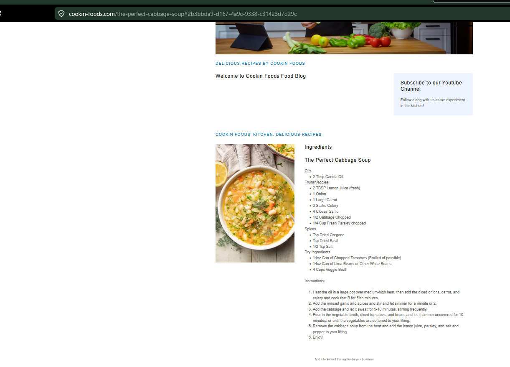

Soups
Cabbage and Potato Soup
Comforting cabbage, leek, potato, and white bean soup with lemon and thyme.
Ingredients
Soup
- 4 tbsp butter, olive oil, or plant butter
- 1 cup carrots, chopped
- 5 cups leeks, thinly sliced
- 8 cups green or Savoy cabbage, sliced
- 2 cups russet or yellow potatoes, diced
- 8 cups low-sodium vegetable broth
- 4 fat garlic cloves, minced
- ½ tsp sea salt
- 2 cans cannellini beans
- 3 tbsp fresh thyme
- Fresh lemon juice, to taste
- Black pepper, to taste
- Shaved parmesan, optional
Instructions
1
Sweat leeks
Heat butter or oil in a large pot. Add leeks and cook until soft and lightly golden, about 10 minutes.
2
Cook cabbage
Add cabbage and cook until wilted, 9–10 minutes.
3
Simmer
Add garlic, broth, potatoes, and thyme. Simmer until potatoes are fork-tender.
4
Finish
Remove thyme stems. Stir in beans, lemon juice, salt, and pepper. Warm through.
5
Serve
Garnish with parmesan and fresh thyme if desired.
Notes
- Longer potato cooking gives a richer, creamier texture without cream.